CODING AGENTS AS PIXEL WORLD MODELS
traex/DeepSeek-V4.1-Flash · phygen_159
点击播放 · 原生 RGB 像素
逐轮保存的候选
回放视频、检查图与代码变化。
每份候选均可单独播放。实际图片检查记录在下方工具轨迹中。
候选 01播放与检查图
点击播放 · 原生 RGB 像素

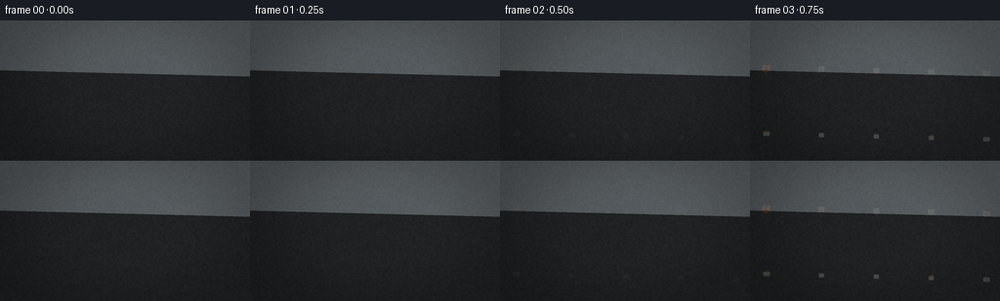
展开代码变化
--- 上一保存版本
+++ 本次保存版本
@@ -0,0 +1,441 @@
+from pathlib import Path
+
+import numpy as np
+from PIL import Image, ImageDraw, ImageFilter
+
+import artifact_io
+
+
+ROOT = Path(__file__).resolve().parent
+W, H, N, FPS = 256, 144, 20, 4.0
+S = 4
+WW, HH = W * S, H * S
+
+
+def smoothstep(edge0, edge1, value):
+ value = np.clip((value - edge0) / np.maximum(edge1 - edge0, 1e-6), 0.0, 1.0)
+ return value * value * (3.0 - 2.0 * value)
+
+
+def value_noise(width, height, cell, seed):
+ rng = np.random.default_rng(seed)
+ gw = max(2, int(np.ceil(width / cell)) + 1)
+ gh = max(2, int(np.ceil(height / cell)) + 1)
+ coarse = rng.random((gh, gw), dtype=np.float32)
+ image = Image.fromarray(np.uint8(np.clip(coarse, 0.0, 1.0) * 255.0))
+ image = image.resize((width, height), Image.Resampling.BICUBIC)
+ return np.asarray(image, dtype=np.float32) / 255.0
+
+
+def fbm(width, height, seed, base_cell=96.0, octaves=4):
+ total = np.zeros((height, width), dtype=np.float32)
+ weight_sum = 0.0
+ weight = 1.0
+ cell = base_cell
+ for octave in range(octaves):
+ total += weight * value_noise(width, height, cell, seed + octave * 137)
+ weight_sum += weight
+ weight *= 0.52
+ cell = max(3.0, cell * 0.49)
+ total /= weight_sum
+ low, high = np.percentile(total, [1.0, 99.0])
+ return np.clip((total - low) / max(high - low, 1e-5), 0.0, 1.0)
+
+
+def colorize(gray, low, high):
+ gray = np.asarray(gray, dtype=np.float32)[..., None]
+ low = np.asarray(low, dtype=np.float32)
+ high = np.asarray(high, dtype=np.float32)
+ return low + (high - low) * gray
+
+
+def blend(base, layer, alpha):
+ alpha = np.asarray(alpha, dtype=np.float32)[..., None]
+ return base * (1.0 - alpha) + layer * alpha
+
+
+def make_background(frame_index):
+ yy, xx = np.mgrid[0:HH, 0:WW].astype(np.float32)
+ x = xx / max(WW - 1, 1)
+ y = yy / max(HH - 1, 1)
+
+ rain_phase = smoothstep(5.2, 7.0, frame_index) * (1.0 - smoothstep(10.4, 12.8, frame_index))
+ age = frame_index / (N - 1)
+ sun = (1.0 - 0.55 * rain_phase) * (1.0 - 0.12 * age)
+
+ horizon = 0.515
+ sky_t = np.clip(y / horizon, 0.0, 1.0)
+ sky = colorize(
+ sky_t,
+ np.array([58, 132, 181], dtype=np.float32),
+ np.array([205, 224, 219], dtype=np.float32),
+ )
+ sky = sky * (0.80 + 0.20 * sun)
+
+ glow_x, glow_y = 0.18, 0.13
+ glow = np.exp(-(((x - glow_x) / 0.26) ** 2 + ((y - glow_y) / 0.20) ** 2) * 2.6)
+ sky += glow[..., None] * np.array([48, 40, 19], dtype=np.float32) * sun
+
+ clouds = fbm(WW, HH, 401, base_cell=220, octaves=4)
+ wisps = fbm(WW, HH, 903, base_cell=92, octaves=3)
+ cloud_mask = smoothstep(0.53, 0.78, clouds * 0.72 + wisps * 0.28)
+ cloud_mask *= np.clip(1.0 - y / 0.62, 0.0, 1.0)
+ cloud_mask *= 0.23 + 0.48 * rain_phase
+ cloud_color = colorize(
+ np.clip(0.35 + 0.45 * wisps, 0.0, 1.0),
+ np.array([117, 135, 146], dtype=np.float32),
+ np.array([224, 229, 224], dtype=np.float32),
+ )
+ sky = blend(sky, cloud_color, cloud_mask * (0.24 + 0.30 * rain_phase))
+
+ ocean_t = np.clip((y - horizon) / (0.83 - horizon), 0.0, 1.0)
+ ocean = colorize(
+ ocean_t,
+ np.array([111, 152, 157], dtype=np.float32),
+ np.array([36, 70, 77], dtype=np.float32),
+ )
+ ocean *= 0.82 + 0.18 * sun
+ ripple = fbm(WW, HH, 111, base_cell=46, octaves=3)
+ horizontal = 0.5 + 0.5 * np.sin(yy * 0.17 + ripple * 13.0 + frame_index * 0.35)
+ ocean += (horizontal * 20.0 + 5.0)[..., None] * np.array([0.48, 0.78, 0.82], dtype=np.float32)
+
+ background = np.where((y < horizon)[..., None], sky, ocean)
+
+ ridge = (
+ horizon
+ - 0.012
+ - 0.018 * np.sin(x * 9.0 + 0.8)
+ - 0.012 * np.sin(x * 23.0 + 2.2)
+ - 0.006 * np.sin(x * 41.0 + 0.4)
+ )
+ ridge_mask = smoothstep(0.0, 1.8 / HH, ridge - y)
+ ridge_mask *= (1.0 - smoothstep(horizon + 0.004, horizon + 0.012, y))
+ land_color = np.array([79, 105, 101], dtype=np.float32) * (0.82 + 0.10 * sun)
+ background = blend(background, land_color, ridge_mask * 0.68)
+
+ haze = np.exp(-((y - horizon) / 0.075) ** 2)
+ background = blend(
+ background,
+ np.array([193, 210, 204], dtype=np.float32) * (0.88 + 0.10 * sun),
+ haze * 0.24,
+ )
+
+ concrete_mask = smoothstep(0.842, 0.848, y)
+ concrete_noise = fbm(WW, HH, 719, base_cell=34, octaves=4)
+ concrete = colorize(
+ concrete_noise,
+ np.array([66, 68, 65], dtype=np.float32),
+ np.array([145, 139, 125], dtype=np.float32),
+ )
+ concrete *= 0.82 + 0.10 * sun
+ background = blend(background, concrete, concrete_mask)
+
+ # Soft foliage just behind the railing gives the scene depth without stealing focus.
+ foliage = fbm(WW, HH, 550, base_cell=70, octaves=4)
+ leaf_clusters = smoothstep(0.57, 0.83, foliage)
+ side_mass = smoothstep(0.54, 0.94, x) * (1.0 - smoothstep(0.72, 0.98, y))
+ side_mass += (1.0 - smoothstep(0.02, 0.20, x)) * (1.0 - smoothstep(0.68, 0.98, y)) * 0.55
+ leaf_color = colorize(
+ foliage,
+ np.array([38, 61, 43], dtype=np.float32),
+ np.array([88, 107, 68], dtype=np.float32),
+ )
+ background = blend(background, leaf_color, leaf_clusters * side_mass * 0.35)
+
+ background *= (0.88 + 0.12 * (1.0 - rain_phase))[..., None]
+ background = blend(background, np.array([87, 103, 111], dtype=np.float32), rain_phase * 0.16)
+ return np.clip(background, 0.0, 255.0), rain_phase
+
+
+def rail_geometry():
+ yy, xx = np.mgrid[0:HH, 0:WW].astype(np.float32)
+ x_norm = xx / max(WW - 1, 1)
+ top_y = HH * (0.332 + 0.044 * x_norm)
+ mid_y = HH * (0.592 + 0.047 * x_norm)
+ bottom_y = HH * (0.804 + 0.046 * x_norm)
+ post_x = np.array([0.065, 0.285, 0.505, 0.725, 0.945], dtype=np.float32) * WW
+ return yy, xx, top_y, mid_y, bottom_y, post_x
+
+
+def cylinder_color(u, along, light, wet):
+ u = np.clip(u, -1.0, 1.0)
+ front = np.sqrt(np.clip(1.0 - u * u, 0.0, 1.0))
+ diffuse = 0.28 + 0.48 * np.clip(0.62 - 0.62 * u, 0.0, 1.0) + 0.20 * front
+ specular = (
+ 1.25 * np.exp(-((u + 0.38) / 0.17) ** 2)
+ + 0.38 * np.exp(-((u - 0.52) / 0.22) ** 2)
+ )
+ reflected_sky = np.exp(-((u + 0.08) / 0.43) ** 2)
+ brushed = 0.94 + 0.10 * (along - 0.5)
+ base = np.stack(
+ [
+ 148.0 * diffuse * brushed,
+ 157.0 * diffuse * brushed,
+ 162.0 * diffuse * brushed,
+ ],
+ axis=-1,
+ )
+ base += reflected_sky[..., None] * np.array([46, 61, 69], dtype=np.float32)
+ base += specular[..., None] * np.array([183, 193, 194], dtype=np.float32) * light
+ base *= 1.0 + 0.13 * wet
+ return np.clip(base, 0.0, 255.0)
+
+
+def render_railing(frame_index, background, rain_phase):
+ yy, xx, top_y, mid_y, bottom_y, post_x = rail_geometry()
+ light = 0.76 + 0.24 * (1.0 - rain_phase)
+ wet = rain_phase * 0.82
+ age = frame_index / (N - 1)
+
+ brushed_top = fbm(WW, HH, 1201, base_cell=190, octaves=3)
+ brushed_vertical = fbm(WW, HH, 1289, base_cell=220, octaves=3)
+ micro = fbm(WW, HH, 1433, base_cell=7, octaves=2)
+ broad = fbm(WW, HH, 1709, base_cell=110, octaves=4)
+
+ metal_mask = np.zeros((HH, WW), dtype=np.float32)
+ metal_rgb = np.zeros((HH, WW, 3), dtype=np.float32)
+
+ def add_horizontal(y_center, radius, seed):
+ d = np.abs(yy - y_center)
+ alpha = smoothstep(radius + 1.1, radius - 1.1, d)
+ u = (yy - y_center) / radius
+ along = np.clip(xx / (WW - 1) + (broad - 0.5) * 0.06, 0.0, 1.0)
+ col = cylinder_color(u, along, light, wet)
+ edge = smoothstep(0.64, 0.99, np.abs(u))
+ col *= 1.0 - 0.20 * edge[..., None]
+ col += ((micro - 0.5) * 7.0)[..., None] * np.array([1.0, 1.0, 1.0])
+ return alpha, col
+
+ def add_vertical(x_center, y_start, y_end, radius, seed):
+ d = np.abs(xx - x_center)
+ in_span = smoothstep(y_start - 1.0, y_start + 2.0, yy) * smoothstep(y_end + 1.0, y_end - 2.0, yy)
+ alpha = smoothstep(radius + 1.0, radius - 1.0, d) * in_span
+ u = (xx - x_center) / radius
+ along = np.clip((yy - y_start) / np.maximum(y_end - y_start, 1.0), 0.0, 1.0)
+ col = cylinder_color(u, along, light, wet)
+ edge = smoothstep(0.64, 0.99, np.abs(u))
+ col *= 1.0 - 0.19 * edge[..., None]
+ col += ((micro - 0.5) * 6.0)[..., None]
+ return alpha, col
+
+ # Bars first, horizontal members last, so the top rail reads as the nearest element.
+ for index, x_center in enumerate(post_x):
+ top = np.interp(x_center, [0.0, WW - 1.0], [top_y[0, 0], top_y[0, -1]])
+ bottom = np.interp(x_center, [0.0, WW - 1.0], [bottom_y[0, 0], bottom_y[0, -1]])
+ alpha, col = add_vertical(x_center, top + 2.0, bottom, 7.2 if index in (0, 4) else 6.0, 2000 + index)
+ metal_rgb = blend(metal_rgb, col, alpha)
+ metal_mask = np.maximum(metal_mask, alpha)
+
+ alpha, col = add_horizontal(mid_y, 5.0, 3001)
+ metal_rgb = blend(metal_rgb, col, alpha)
+ metal_mask = np.maximum(metal_mask, alpha)
+
+ alpha, col = add_horizontal(bottom_y, 7.2, 3002)
+ metal_rgb = blend(metal_rgb, col, alpha)
+ metal_mask = np.maximum(metal_mask, alpha)
+
+ alpha, col = add_horizontal(top_y, 12.0, 3003)
+ metal_rgb = blend(metal_rgb, col, alpha)
+ metal_mask = np.maximum(metal_mask, alpha)
+
+ # Contact plates make the corrosion origin points legible.
+ plates = Image.new("L", (WW, HH), 0)
+ plate_draw = ImageDraw.Draw(plates)
+ for x_center in post_x:
+ top = float(np.interp(x_center, [0.0, WW - 1.0], [top_y[0, 0], top_y[0, -1]]))
+ bottom = float(np.interp(x_center, [0.0, WW - 1.0], [bottom_y[0, 0], bottom_y[0, -1]]))
+ rw = 15 if x_center < WW * 0.1 or x_center > WW * 0.9 else 12
+ plate_draw.rounded_rectangle(
+ (x_center - rw, top - 10, x_center + rw, top + 12),
+ radius=4,
+ fill=255,
+ )
+ plate_draw.rounded_rectangle(
+ (x_center - rw + 2, bottom - 9, x_center + rw - 2, bottom + 8),
+ radius=3,
+ fill=225,
+ )
+ plate_mask = np.asarray(plates.filter(ImageFilter.GaussianBlur(0.9)), dtype=np.float32) / 255.0
+ plate_mask *= smoothstep(0.08, 0.20, age)
+ plate_color = np.array([118, 125, 122], dtype=np.float32) * (0.76 + 0.18 * light)
+ metal_rgb = blend(metal_rgb, plate_color, plate_mask * metal_mask * 0.80)
+
+ # Soft shadow separates the railing from the sea.
+ shadow = np.asarray(
+ Image.fromarray(np.uint8(metal_mask * 255.0)).filter(ImageFilter.GaussianBlur(7.0)),
+ dtype=np.float32,
+ ) / 255.0
+ shadow = np.roll(shadow, 5, axis=0)
+ shadow = np.roll(shadow, 3, axis=1)
+ background *= (1.0 - 0.40 * shadow)[..., None]
+
+ scene = blend(background, metal_rgb, metal_mask)
+
+ # Scratch network gives corrosion plausible places to begin.
+ scratch_image = Image.new("L", (WW, HH), 0)
+ scratch_draw = ImageDraw.Draw(scratch_image)
+ srng = np.random.default_rng(5901)
+ for _ in range(46):
+ px = float(srng.uniform(0.02, 0.98) * WW)
+ top = float(np.interp(px, [0.0, WW - 1.0], [top_y[0, 0], top_y[0, -1]]))
+ py = top + float(srng.normal(0.0, 7.0))
+ length = float(srng.uniform(7.0, 34.0))
+ angle = float(srng.normal(0.04, 0.22))
+ scratch_draw.line(
+ (px, py, px + length, py + np.tan(angle) * length),
+ fill=int(srng.uniform(90, 210)),
+ width=int(srng.choice([1, 1, 2])),
+ )
+ scratches = np.asarray(scratch_image.filter(ImageFilter.GaussianBlur(1.0)), dtype=np.float32) / 255.0
+
+ joint = np.zeros((HH, WW), dtype=np.float32)
+ for x_center in post_x:
+ top = float(np.interp(x_center, [0.0, WW - 1.0], [top_y[0, 0], top_y[0, -1]]))
+ bottom = float(np.interp(x_center, [0.0, WW - 1.0], [bottom_y[0, 0], bottom_y[0, -1]]))
+ joint += np.exp(-(((xx - x_center) / 24.0) ** 2 + ((yy - top) / 26.0) ** 2) * 2.0)
+ joint += 0.72 * np.exp(-(((xx - x_center) / 21.0) ** 2 + ((yy - bottom) / 20.0) ** 2) * 2.0)
+ joint = np.clip(joint, 0.0, 1.0)
+
+ u_top = np.abs((yy - top_y) / 12.0)
+ exposed_edge = smoothstep(0.58, 1.0, np.clip(u_top, 0.0, 1.0))
+ rust_noise = fbm(WW, HH, 3307, base_cell=54, octaves=5)
+ rust_noise2 = fbm(WW, HH, 3407, base_cell=17, octaves=3)
+ start = (
+ 0.49
+ - 0.25 * joint
+ - 0.16 * scratches
+ - 0.10 * exposed_edge
+ + 0.23 * (rust_noise - 0.5)
+ )
+ progress = 1.30 * (age ** 0.82)
+ rust = smoothstep(start, start + 0.22, progress)
+ rust *= metal_mask * (0.34 + 0.66 * smoothstep(0.18, 0.72, rust_noise2))
+ rust *= smoothstep(0.01, 0.13, age)
+
+ rust_dark = colorize(
+ np.clip(rust_noise * 0.62 + rust_noise2 * 0.38, 0.0, 1.0),
+ np.array([67, 38, 26], dtype=np.float32),
+ np.array([123, 66, 32], dtype=np.float32),
+ )
+ rust_bright = colorize(
+ np.clip(broad * 0.70 + rust_noise2 * 0.30, 0.0, 1.0),
+ np.array([127, 62, 25], dtype=np.float32),
+ np.array([206, 112, 43], dtype=np.float32),
+ )
+ rust_mix = smoothstep(0.25, 0.75, rust_noise2)
+ rust_color = rust_dark * (1.0 - rust_mix[..., None]) + rust_bright * rust_mix[..., None]
+ scene = blend(scene, rust_color, rust * 0.94)
+
+ # Pitting appears only after broad corrosion has developed.
+ pits = smoothstep(0.66, 0.82, rust_noise2) * smoothstep(0.12, 0.46, rust)
+ pit_shade = np.array([38, 28, 22], dtype=np.float32) + (rust_noise[..., None] * 15.0)
+ scene = blend(scene, pit_shade, pits * 0.62)
+
+ # Pale corrosion blooms around the wettest joints.
+ bloom = smoothstep(0.52, 0.78, joint + rust_noise2 * 0.36) * smoothstep(0.25, 0.62, age)
+ bloom_color = np.array([173, 145, 105], dtype=np.float32)
+ scene = blend(scene, bloom_color, bloom * metal_mask * 0.26)
+
+ # Rust runs downward from joints, becoming long and irregular over time.
+ drips = Image.new("RGBA", (WW, HH), (0, 0, 0, 0))
+ drip_draw = ImageDraw.Draw(drips)
+ drng = np.random.default_rng(6203)
+ for x_center in post_x:
+ for _ in range(10):
+ px = float(x_center + drng.normal(0.0, 11.0))
+ top = float(np.interp(px, [0.0, WW - 1.0], [top_y[0, 0], top_y[0, -1]]))
+ start_y = top + drng.uniform(4.0, 16.0)
+ length = drng.uniform(12.0, 96.0) * (0.35 + 0.90 * age)
+ alpha = int(np.clip(20.0 + 120.0 * age * drng.uniform(0.45, 1.0), 0.0, 150.0))
+ drip_draw.line(
+ (px, start_y, px + drng.normal(0.0, 1.2), start_y + length),
+ fill=(104, 54, 31, alpha),
+ width=int(drng.choice([1, 1, 2, 3])),
+ )
+ drip_layer = np.asarray(drips, dtype=np.float32)
+ drip_alpha = drip_layer[..., 3:4] / 255.0
+ scene = scene * (1.0 - drip_alpha * 0.64) + drip_layer[..., :3] * drip_alpha * 0.64
+
+ # Grime settles into lower joints and along the bottom rail.
+ grime_noise = fbm(WW, HH, 8111, base_cell=26, octaves=4)
+ lower_grime = smoothstep(0.62, 0.91, yy / HH) * smoothstep(0.34, 0.92, age)
+ grime = lower_grime * (0.20 + 0.55 * grime_noise) * metal_mask
+ scene = blend(scene, np.array([42, 46, 37], dtype=np.float32), grime * 0.40)
+
+ if rain_phase > 0.02:
+ bead_rng = np.random.default_rng(9100 + frame_index * 17)
+ bead_image = Image.new("RGBA", (WW, HH), (0, 0, 0, 0))
+ bead_draw = ImageDraw.Draw(bead_image)
+ rail_rows = [
+ (float(np.mean(top_y)), 12.0, 90),
+ (float(np.mean(mid_y)), 5.0, 35),
+ (float(np.mean(bottom_y)), 7.0, 45),
+ ]
+ for row, radius, count in rail_rows:
+ for _ in range(count):
+ px = float(bead_rng.uniform(0.01, 0.99) * WW)
+ py = row + float(bead_rng.uniform(-radius * 0.68, radius * 0.68))
+ rr = float(bead_rng.uniform(1.1, 2.8))
+ bead_draw.ellipse(
+ (px - rr, py - rr * 0.75, px + rr, py + rr * 0.75),
+ fill=(191, 216, 222, int(80 * rain_phase)),
+ outline=(234, 242, 241, int(150 * rain_phase)),
+ width=1,
+ )
+ beads = np.asarray(bead_image, dtype=np.float32)
+ bead_alpha = beads[..., 3:4] / 255.0
+ scene = scene * (1.0 - bead_alpha * 0.62) + beads[..., :3] * bead_alpha * 0.62
+
+ return scene, rain_phase
+
+
+def add_rain(scene, frame_index, rain_phase):
+ if rain_phase <= 0.01:
+ return scene
+ overlay = Image.new("RGBA", (WW, HH), (0, 0, 0, 0))
+ draw = ImageDraw.Draw(overlay)
+ rng = np.random.default_rng(18000 + frame_index * 37)
+ count = int(175 * rain_phase)
+ for _ in range(count):
+ px = float(rng.uniform(-40.0, WW + 30.0))
+ py = float(rng.uniform(-30.0, HH + 20.0))
+ length = float(rng.uniform(11.0, 33.0))
+ alpha = int(rng.uniform(36.0, 105.0) * rain_phase)
+ draw.line(
+ (px, py, px - length * 0.18, py + length),
+ fill=(192, 215, 222, alpha),
+ width=1 if rng.random() < 0.82 else 2,
+ )
+ rain = np.asarray(overlay, dtype=np.float32)
+ alpha = rain[..., 3:4] / 255.0
+ return scene * (1.0 - alpha * 0.70) + rain[..., :3] * alpha * 0.70
+
+
+def finish_frame(scene, frame_index):
+ yy, xx = np.mgrid[0:HH, 0:WW].astype(np.float32)
+ cx, cy = (WW - 1) * 0.50, (HH - 1) * 0.47
+ distance = np.sqrt(((xx - cx) / (WW * 0.60)) ** 2 + ((yy - cy) / (HH * 0.68)) ** 2)
+ vignette = np.clip(1.0 - 0.22 * smoothstep(0.28, 1.05, distance), 0.0, 1.0)
+ scene *= vignette[..., None]
+
+ grain = value_noise(WW, HH, 1.7, 22000 + frame_index * 11) - 0.5
+ scene += grain[..., None] * 2.6
+ image = Image.fromarray(np.uint8(np.clip(scene, 0.0, 255.0)))
+ image = image.resize((W, H), Image.Resampling.LANCZOS)
+ return np.asarray(image, dtype=np.uint8)
+
+
+def generate():
+ frames = []
+ for frame_index in range(N):
+ background, rain_phase = make_background(frame_index)
+ scene, rain_phase = render_railing(frame_index, background, rain_phase)
+ scene = add_rain(scene, frame_index, rain_phase)
+ frames.append(finish_frame(scene, frame_index))
+ return np.stack(frames, axis=0)
+
+
+if __name__ == "__main__":
+ frames = generate()
+ artifact_io.save(frames, ROOT)
+ print(f"saved {frames.shape} RGB frames to {ROOT}")
候选 02播放与检查图
点击播放 · 原生 RGB 像素

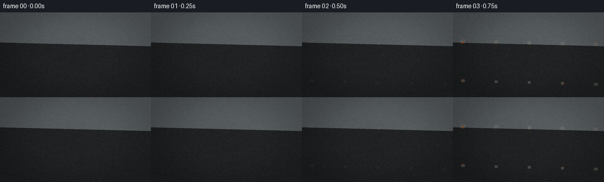
展开代码变化
--- 上一保存版本
+++ 本次保存版本
@@ -309,13 +309,13 @@
)
progress = 1.30 * (age ** 0.82)
rust = smoothstep(start, start + 0.22, progress)
- rust *= metal_mask * (0.34 + 0.66 * smoothstep(0.18, 0.72, rust_noise2))
+ rust *= metal_mask * (0.58 + 0.42 * smoothstep(0.16, 0.74, rust_noise2))
rust *= smoothstep(0.01, 0.13, age)
rust_dark = colorize(
np.clip(rust_noise * 0.62 + rust_noise2 * 0.38, 0.0, 1.0),
- np.array([67, 38, 26], dtype=np.float32),
- np.array([123, 66, 32], dtype=np.float32),
+ np.array([83, 48, 29], dtype=np.float32),
+ np.array([134, 70, 32], dtype=np.float32),
)
rust_bright = colorize(
np.clip(broad * 0.70 + rust_noise2 * 0.30, 0.0, 1.0),
@@ -324,12 +324,12 @@
)
rust_mix = smoothstep(0.25, 0.75, rust_noise2)
rust_color = rust_dark * (1.0 - rust_mix[..., None]) + rust_bright * rust_mix[..., None]
- scene = blend(scene, rust_color, rust * 0.94)
+ scene = blend(scene, rust_color, rust * 0.97)
# Pitting appears only after broad corrosion has developed.
- pits = smoothstep(0.66, 0.82, rust_noise2) * smoothstep(0.12, 0.46, rust)
- pit_shade = np.array([38, 28, 22], dtype=np.float32) + (rust_noise[..., None] * 15.0)
- scene = blend(scene, pit_shade, pits * 0.62)
+ pits = smoothstep(0.76, 0.91, rust_noise2) * smoothstep(0.20, 0.56, rust)
+ pit_shade = np.array([52, 34, 24], dtype=np.float32) + (rust_noise[..., None] * 18.0)
+ scene = blend(scene, pit_shade, pits * 0.46)
# Pale corrosion blooms around the wettest joints.
bloom = smoothstep(0.52, 0.78, joint + rust_noise2 * 0.36) * smoothstep(0.25, 0.62, age)
@@ -341,17 +341,19 @@
drip_draw = ImageDraw.Draw(drips)
drng = np.random.default_rng(6203)
for x_center in post_x:
- for _ in range(10):
+ for _ in range(6):
px = float(x_center + drng.normal(0.0, 11.0))
top = float(np.interp(px, [0.0, WW - 1.0], [top_y[0, 0], top_y[0, -1]]))
start_y = top + drng.uniform(4.0, 16.0)
- length = drng.uniform(12.0, 96.0) * (0.35 + 0.90 * age)
- alpha = int(np.clip(20.0 + 120.0 * age * drng.uniform(0.45, 1.0), 0.0, 150.0))
- drip_draw.line(
- (px, start_y, px + drng.normal(0.0, 1.2), start_y + length),
- fill=(104, 54, 31, alpha),
- width=int(drng.choice([1, 1, 2, 3])),
- )
+ length = drng.uniform(15.0, 112.0) * (0.40 + 0.82 * age)
+ alpha = int(np.clip(12.0 + 92.0 * age * drng.uniform(0.45, 1.0), 0.0, 112.0))
+ points = [
+ (px, start_y),
+ (px + drng.normal(0.0, 1.3), start_y + length * 0.42),
+ (px + drng.normal(0.0, 1.9), start_y + length * 0.73),
+ (px + drng.normal(0.0, 2.3), start_y + length),
+ ]
+ drip_draw.line(points, fill=(110, 59, 33, alpha), width=2)
drip_layer = np.asarray(drips, dtype=np.float32)
drip_alpha = drip_layer[..., 3:4] / 255.0
scene = scene * (1.0 - drip_alpha * 0.64) + drip_layer[..., :3] * drip_alpha * 0.64
候选 03播放与检查图
点击播放 · 原生 RGB 像素
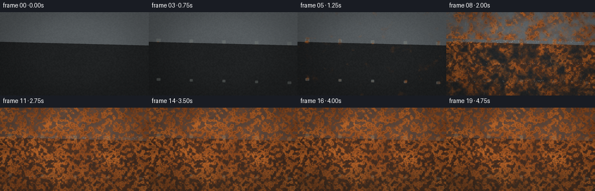
展开代码变化
--- 上一保存版本
+++ 本次保存版本
@@ -307,7 +307,7 @@
- 0.10 * exposed_edge
+ 0.23 * (rust_noise - 0.5)
)
- progress = 1.30 * (age ** 0.82)
+ progress = 1.12 * (age ** 0.92)
rust = smoothstep(start, start + 0.22, progress)
rust *= metal_mask * (0.58 + 0.42 * smoothstep(0.16, 0.74, rust_noise2))
rust *= smoothstep(0.01, 0.13, age)
可观测工具轨迹
实际执行的命令与返回图片。
命令 1exit 0
/bin/bash -c "pwd && rg --files -g 'prompt.txt' -g 'GENERATION_RULES.md' -g 'task_spec.json' -g '"'!**/.git/**'"'"
命令 2exit 0
/bin/bash -c "find . -maxdepth 2 -type f -printf '%p\\n' | sort | head -200"
命令 3exit 0
/bin/bash -c 'ls -la'
命令 4exit 0
/bin/bash -c 'cat GENERATION_RULES.md'
命令 5exit 0
/bin/bash -c 'cat prompt.txt'
命令 6exit 0
/bin/bash -c 'cat task_spec.json'
命令 7exit 0
/bin/bash -c "sed -n '1,260p' artifact_io.py && sed -n '1,240p' player_template.html"
命令 8exit 0
/bin/bash -c "python - <<'PY'
import PIL, numpy
print('PIL', PIL.__version__, 'numpy', numpy.__version__)
PY"命令 9exit 1
/bin/bash -c 'python generate.py'
命令 10exit 0
/bin/bash -c 'python generate.py'
命令 11exit 0
/bin/bash -c "python - <<'PY'
from PIL import Image
for f in ['frames/00.png','frames/10.png','frames/19.png']:
im=Image.open(f).resize((768,432), Image.Resampling.NEAREST)
im.save('.tmp/'+f.split('/')[-1].replace('.png','_zoom.png'))
PY"命令 12exit 0
/bin/bash -c 'python generate.py'
命令 13exit 0
/bin/bash -c "python - <<'PY'
from PIL import Image
import numpy as np
for i in [0,3,7,10,14,19]:
a=np.asarray(Image.open(f'frames/{i:02d}.png'))
print(i, 'mean', a.mean(axis=(0,1)).round(1), 'std', a.std(axis=(0,1)).round(1))
PY"命令 14exit 0
/bin/bash -c "python - <<'PY'
from PIL import Image
for i in [0,7,14,19]:
im=Image.open(f'frames/{i:02d}.png').resize((1024,576), Image.Resampling.NEAREST)
im.save(f'.tmp/{i:02d}_zoom.png')
PY"命令 15exit 0
/bin/bash -c 'python generate.py'
命令 16exit 0
/bin/bash -c "python - <<'PY'
from pathlib import Path
import json, numpy as np
from PIL import Image
root=Path('.')
spec=json.loads((root/'task_spec.json').read_text())
z=np.load(root/'pixels.npz')['pixels']
print('pixels', z.shape, z.dtype)
print('frame_files', len(list((root/'frames').glob('*.png'))))
print('html_bytes', (root/'index.html').stat().st_size)
print('inspection', Image.open(root/'inspection.png').size)
print('transition', Image.open(root/'transition_check.png').size)
print('audio_exists', (root/'audio.wav').exists(), 'spec_audio', spec.get('audio'))
imgs=[np.asarray(Image.open(root/'frames'/f'{i:02d}.png')) for i in range(spec['frames'])]
print('all_frames', np.stack(imgs).shape, 'unique_per_frame', [len(np.unique(a.reshape(-1,3),axis=0)) for a in imgs])
PY"视觉工具实际返回图片 1
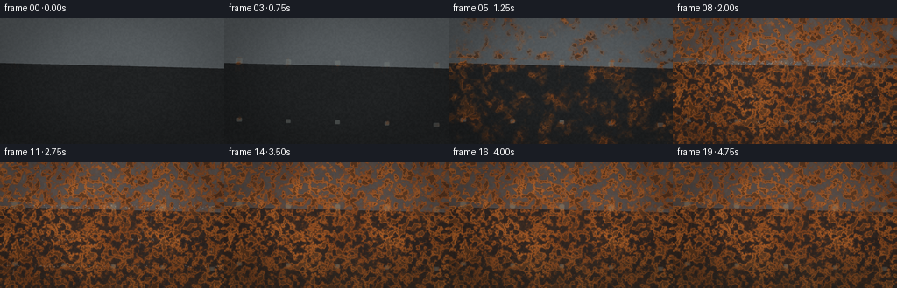
视觉工具实际返回图片 2
视觉工具实际返回图片 3
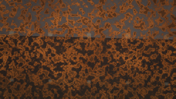
视觉工具实际返回图片 4
视觉工具实际返回图片 5
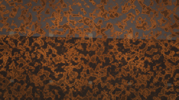
视觉工具实际返回图片 6
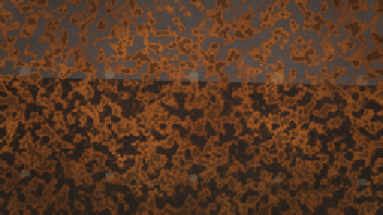
视觉工具实际返回图片 7
视觉工具实际返回图片 8
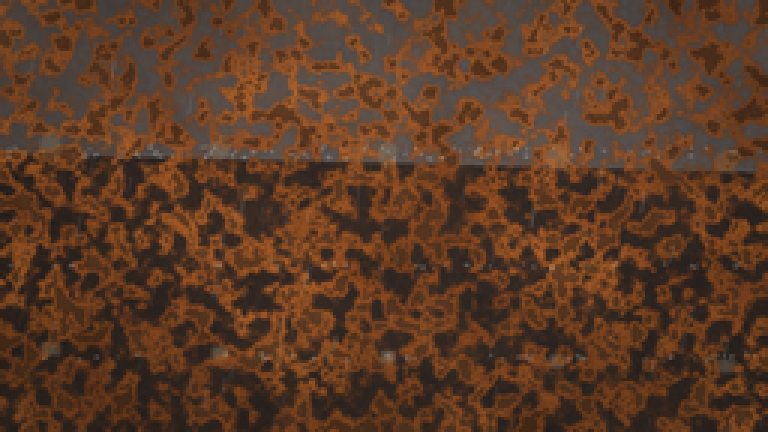
视觉工具实际返回图片 9
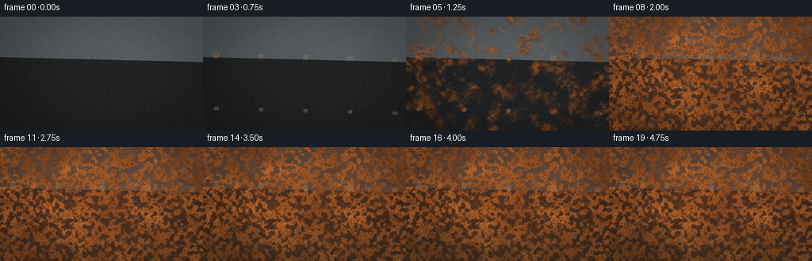
视觉工具实际返回图片 10
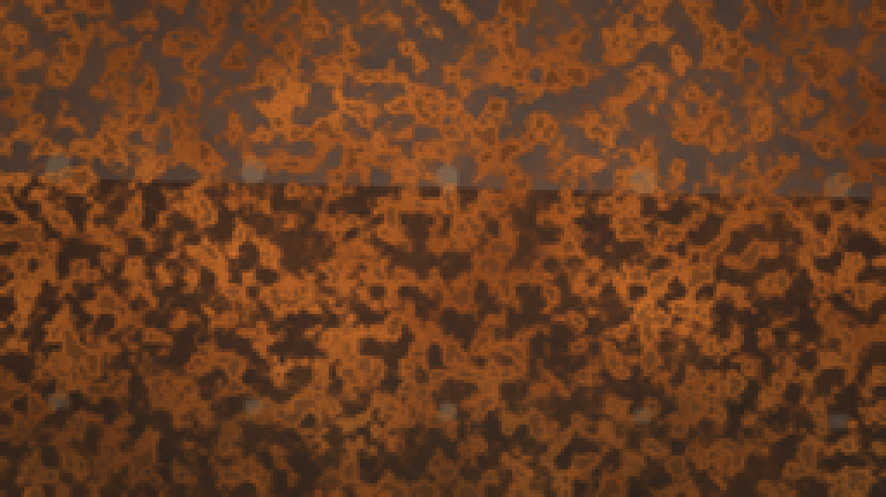
视觉工具实际返回图片 11
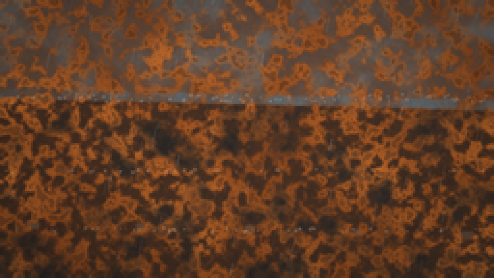
视觉工具实际返回图片 12
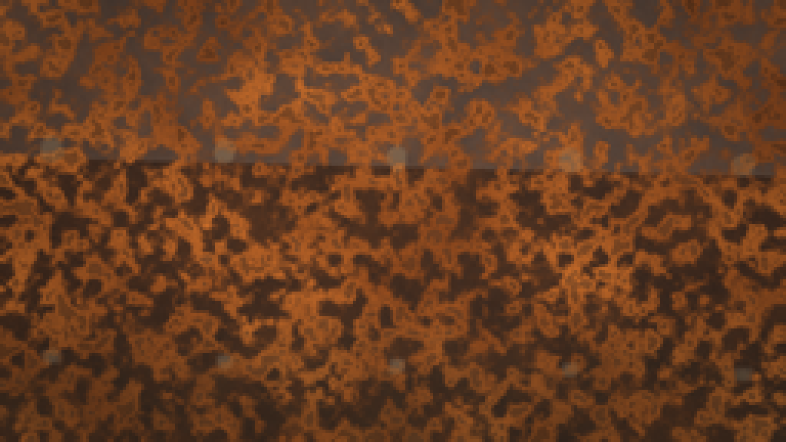
视觉工具实际返回图片 13

保存候选 3 份；完成命令 16 次；可验证图片返回 13 张。原始 API 响应与完整日志保留在本地。